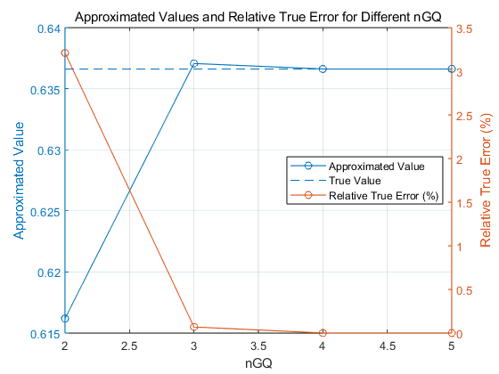

clc;
clear;
close all;
format long;
a = 0;
b = 1;
f = @(x) sin(pi * x);
nGQ_values = 2:5;
true_value = 2 / pi;
approx_values = zeros(size(nGQ_values));
relative_errors = zeros(size(nGQ_values));
for idx = 1:length(nGQ_values)
nGQ = nGQ_values(idx);
[points, weights] = GQref1D(nGQ);
approx_values(idx) = GQintegral1D(f,a,b,nGQ);
relative_errors(idx) = abs(true_value - approx_values(idx)) / (true_value) * 100;
end
figure;
yyaxis left;
plot(nGQ_values, approx_values, '-o', 'DisplayName', 'Approximated Value');
ylabel('Approximated Value');
hold on;
plot(nGQ_values, repmat(true_value, 1, numel(nGQ_values)), '--', 'DisplayName', 'True Value');
yyaxis right;
plot(nGQ_values, relative_errors, '-o', 'DisplayName', 'Relative True Error (%)');
ylabel('Relative True Error (%)');
title('Approximated Values and Relative True Error for Different nGQ');
xlabel('nGQ');
legend('show', 'Location', 'east');
grid on;
function [points, weights] = GQref1D(nGQ)
switch nGQ
case 1
weights = 0;
points = 2;
case 2
weights = [1,1];
points = [-0.5773502691896257, 0.5773502691896257];
case 3
weights = [0.8888888888888888, 0.5555555555555556, 0.5555555555555556];
points = [0, -0.7745966692414834, 0.7745966692414834];
case 4
weights = [0.6521451548625461, 0.6521451548625461, 0.3478548451374538, 0.3478548451374538];
points = [-0.3399810435848563, 0.3399810435848563, -0.8611363115940526, 0.8611363115940526];
case 5
weights = [0.5688888888888889, 0.4786286704993665, 0.4786286704993665, 0.2369268850561891, 0.2369268850561891];
points = [0, -0.5384693101056831, 0.5384693101056831, -0.9061798459386640, 0.9061798459386640];
end
end
function approx_values = GQintegral1D(f,a,b,nGQ)
[points, weights] = GQref1D(nGQ);
approx_values = ( (b-a)/2 ) * sum(weights .* f( ( (b - a) / 2 * points ) + ( (a + b) / 2) ) );
end
